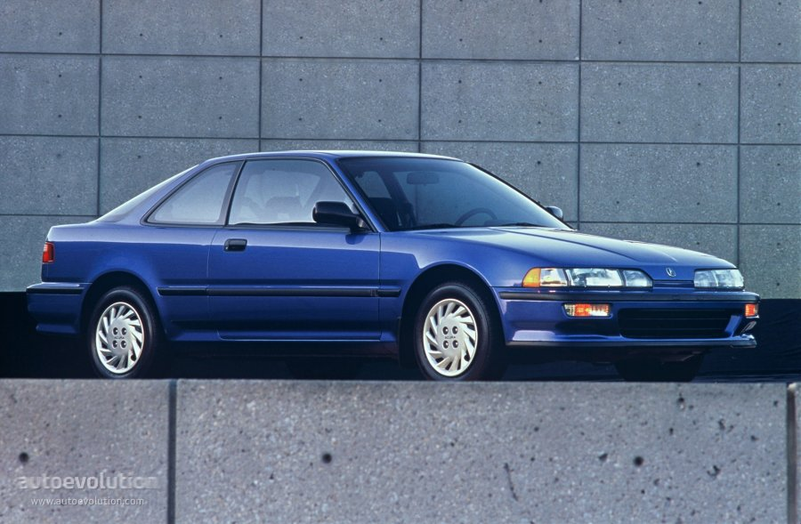

Ryo Khrisna Fitriawan | 14 oktober 2022
VTEC merupakan singkatan dari Variable Valve Timing and Lift Electronic Control, yaitu sistem variable pengontrolan katup yang dikembangkan oleh pabrikan otomotif Honda untuk mesin bensin. Sistem VTEC ini merupakan inovasi pengontrolan katup yang pertama kali lahir oleh seorang insinyur Honda, Kajitani Ikuo.
Meskipun sebagian besar pembuat mobil di seluruh dunia telah mulai mengembangkan variable valve timing mereka sendiri, seperti Toyota dengan VVT-i, Mitsubishi dengan MiVEC, Nissan Neo-VVL, dan semacamnya. VTEC merupakan salah satu keberhasilan besar di dunia otomotif dan menjadi merek dagang yang merupakan bagian integral dari konsumen sebagai identitas dari produk Honda.
Pada awal tahun 80-an, permintaan untuk sepeda motor sport bertenaga tinggi melonjak, Honda memutuskan untuk memulai sebuah misi untuk mencoba membuat sebuah mesin yang memiliki output mesin yang tinggi serta ketahanan mesin yang baik . Setelah studi kelayakan, Team Research and Development Honda memutuskan untuk membuat sebuah mesin yang bisa mendapat 200hp per liter serta idling mesin yang stabil.
Team Research and Development Honda menemukan bahwa mereka harus menggunakan metode untuk melawan resistensi saluran masuk udara pada putaran mesin rendah hingga menengah. Solusi dari metode tersebut adalah REV (Revolution-modulated valve control) atau bisa juga disebut HYPER VTEC, yakni mekanisme untuk mem-pause bukaan katup. Sistem ini memiliki tugas untuk menghentikan paksa beberapa katup bila diperlukan, untuk mengoptimalkan aliran udara dan mencapai idling mesin yang stabil, serta meningkatkan kehalusan pada putaran mesin rendah hingga menengah. Mesin yang pertama menggunakan sistem REV ini ialah sepeda motor Honda CBR400F pada tahun 1983. Dari teknologi REV yang digunakan pada mesin sepeda motor, Honda memutuskan untuk mengembangkan teknologi serupa VTEC untuk mobil dengan dua camshaft profile, yakni putaran mesin renda hingga menengah serta untuk menengah hingga putaran atas.
Mobil besutan Honda pertama yang menggunakan VTEC ialah 1989 JDM-spec Integra dan Civic CRX Sir, yang menggunakan mesin DOHC 160hp B16A. VTEC mulanya dirancang untuk mesin DOHC (Double Overhead Camshaft), Variable Valve Timing dan Lift Electronic Control berperan sebagai switch antara mode menghemat bahan bakar dan mode high performace. Hal ini dilakukan oleh valve timing yang bergerak pada kecepatan rendah dan profil cam yang kecil pada rpm mesin rendah untuk menekan konsumsi bahan bakar.
Di sisi lain, ketika mesin membutuhkan power lebih, VTEC mempercepat valve timing dan beralih ke profil cam yang lebih besar yang memungkinkan untuk membuka tutup katup lebih lama. Peralihan dari camshaft low profile dimaksudkan untuk menekan konsumsi bahan bakar, untuk camshaft high profile dimaksudkan untuk meningkatkan daya output yang dilakukan melalui pin pengunci yang menghubungkan dua lobus camshaft independen pada kecepatan mesin tertentu.